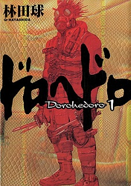
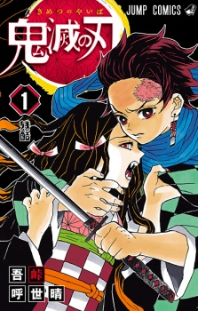
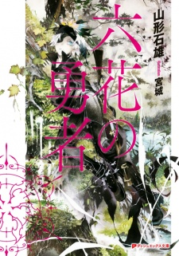
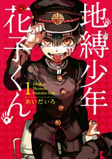
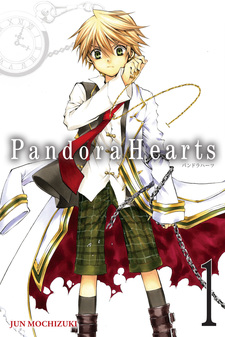

Mina Intressen
Programmering
Jag gillar att programmera, jag har gjort det förrut och tycker fortfarande att det är roligt. Mitt första programmeringspråk var Lua och Javascript, Lua var ganska lätt för mig men Javascript förstod jag inte så mycket förrut. Efter jag började tvåan i Teknikum så har jag lärt mig Javascript, CSS, HTML, C++, C# och flera andra saker om programmering. Just nu försöker jag använda mina kunskaper till att skapa olika saker, jag testar också runt med olika commandblock.
Spel
Jag gillar att spela flera spel i olika genrer, den bästa genren är kreativitet och öppen värld genrer. Jag känner som att de ger mig frihet och kontroll över spel världen, jag älskar också att bygga väldigt mycket så spel som inkluderar stadbyggare eller bara något man kan bygga själv med är väldigt roligt.
Det finns flera olika spel jag tycker om, det inkluderar: City Skylines, Left 4 Dead 2, Killing Floor 2, Sims 3 & 4, Dead By Daylight, Slime Rancher, Minecraft, We Happy Few, Payday 2, Dead Rising 1-4, och flera andra. Jag älskar dessa spelen inte bara för att de är roliga utan för att de ger mig fri kontroll utav vad jag kan göra, några av dessa spelen är mer skjutar spel men jag tycker om de också.
Jag gillar att spela med mina vänner flesta av tiden när det går eftersom vi kan samarbeta för att klara spelet, och ibland kan det vara mer roligt eftersom det finns spel där man måste samarbeta och ibland går det ganska dåligt för att det är svårt. Overcooked 1 och 2 är ett exempel, Moving Out också.
Jag brukade spela väldigt mycket förut men eftersom jag knappast har någon tid längre så kan jag inte spela, och så har jag inget intresse längre i några spel.
Böcker och Serier
Jag gillar att läsa och kolla på olika serier, det distraherar mig lite från nuvarande tiden och låter mig komma in i min egen lilla värld där jag tänker på vad jag vill. Jag har läst väldigt många olika serier och det fanns många som jag tyckte om men också många som inte var så bra. Mesta av dessa serier är Manga och Anime ibland så är det också korta romaner. Jag älskar att läsa serier som har action, komedi, mysteri och lite fantasi, det får mig att tänka mycket och hjälper mig vara kreativ.
| Namn | Typ | Genre | Beskrivning | Poäng | |
|---|---|---|---|---|---|
|  | Dorohedoro | Manga | Action Komedi Fantasi Skräck | Berättelsen handlar om den minneslösa Caiman, som arbetar med sin vän Nikaido för att återställa sina minnen. | 10/10 |
|  | Kimetsu No Yaiba | Manga | Action Övernaturligt | I en värld med demoner finner du Tanjiro som försöker rädda sin syster efter att hon har blivit en demon, han möter flera utmaningar före han kan rädda henne. | 9/10 |
|  | Rokka No Yuusha | Roman | Action Äventyr Fantasy Mysterium | Berättelsen följer Adlet Mayer som försöker bli en modig för att kämpa mot demonguden, på vägen dit möter han flera olika farliga äventyr och utmaningar. | 10/10 |
|  | Jibaku Shounen Hanako-kun | Manga | Övernaturligt | En spöke fastbunden till badrummet möter en tjej som heter Yashiro, tillsammans löser de mysteriet om hur spöken kom till skolan. | 10/10 |
|  | Pandora Hearts | Manga | Äventyr Fantasy Mysterium Övernaturligt | I en värld med magi och demoner möter vi Oz som faller ner i en hemlig värld där han möter en flicka som heter Alice, tillsammans med henne möter han olika fiender och försöker få reda på vad det är som händer | 9/10 |
 |
Tokyo卍Revengers | Manga | Action | Berättelsen följer Takemichi som kan resa fram och tillbaka i tiden, med hjälp av sina krafter går han 12 år tillbaks i tiden för att rädda sin flickvän. Han möter flera olika personer och går med i en grupp där han måste tänka smart för att överleva. | 8/10 |